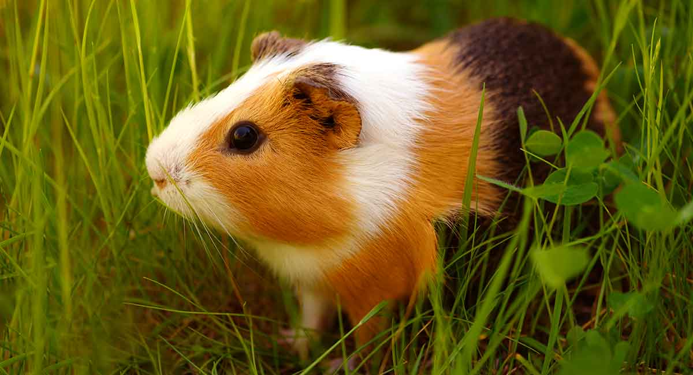
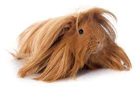

Guinea pigs are adorable and popular pets known for their diverse breeds and unique characteristics. Each breed possesses distinct features, coat types, and temperaments, providing plenty of options for guinea pig enthusiasts. Whether you prefer a short-coated American guinea pig or a long-haired Peruvian, there's a breed that suits your preferences. Get to know some of the fascinating guinea pig breeds:
- American Guinea Pig: Known for its short, smooth coat and rounded body shape, the American guinea pig comes in various colors and patterns. They have a friendly and gentle temperament, making them great companions. 
- Abyssinian Guinea Pig: The Abyssinian guinea pig has a distinctive coat with multiple rosettes or swirls. Their fur is usually coarse and can come in different colors and patterns. Abyssinians are energetic and curious by nature.
- Peruvian Guinea Pig: The Peruvian guinea pig is recognized for its long, flowing hair that grows continuously. Regular grooming is necessary to prevent matting and maintain their impressive coat length. Peruvians are generally docile and enjoy gentle handling. 
- Skinny Pig: Hairless except for a few patches of fuzz, the Skinny Pig has wrinkled and pigmented skin, giving it a unique appearance. They require special attention to maintain body temperature and need a warm and draft-free environment.
- Silkie Guinea Pig: Silkie guinea pigs have a long, soft, and silky coat that requires regular grooming. Their fur is often straight and falls evenly on both sides of their body. They have a friendly and calm temperament.
- Coronet Guinea Pig: Similar to the Silkie guinea pig, the Coronet has a long, silky coat. However, Coronets also have a distinct crest of hair on their forehead. They are known for their friendly and outgoing nature.
- Rex Guinea Pig: Rex guinea pigs have a short, dense, and plush coat with a unique texture. Their fur grows in a direction opposite to the regular hair growth, which gives them a velvety appearance. Rex guinea pigs have a calm and gentle temperament.
- Lunkarya Guinea Pig: Lunkarya guinea pigs have a dense and curly coat that covers their entire body, including their face. Their fur can require extra care to prevent matting. Lunkaryas are generally friendly and sociable.
- Merino Guinea Pig: Merino guinea pigs have a dense and curly coat that requires regular grooming. Their fur can be longer and wavier than that of Lunkaryas. Merinos are known for their gentle and docile nature.
- Sheltie Guinea Pig: Sheltie guinea pigs have a long, straight, and silky coat that grows all over their body. Their fur requires regular grooming to prevent matting. Shelties are generally calm and friendly.
- Swiss Teddy Guinea Pig: Swiss Teddies have a dense and thick coat with a distinctive swirl on their forehead. Their fur is usually straight and falls evenly on both sides of their body. They are known for their friendly and outgoing personalities.

 Teddy Guinea Pig: Teddy guinea pigs have a dense, wiry coat that resembles the texture of a teddy bear. They have a stocky body shape and come in various colors. Teddy guinea pigs are known for their friendly and outgoing personalities.
Teddy Guinea Pig: Teddy guinea pigs have a dense, wiry coat that resembles the texture of a teddy bear. They have a stocky body shape and come in various colors. Teddy guinea pigs are known for their friendly and outgoing personalities.
 Texel Guinea Pig: The Texel guinea pig has a long, curly coat that gives it a unique and adorable appearance. Their coat requires regular grooming to prevent tangling and matting. Texels are generally friendly and sociable.
Texel Guinea Pig: The Texel guinea pig has a long, curly coat that gives it a unique and adorable appearance. Their coat requires regular grooming to prevent tangling and matting. Texels are generally friendly and sociable.
These guinea pig breeds offer a wide range of coat types, appearances, and temperaments, providing plenty of options for guinea pig enthusiasts. Whether you're looking for a hairless Skinny Pig, a fluffy Texel, or a silky Silkie, there's a breed to suit every preference. Remember that while each breed has its own unique characteristics, every guinea pig, regardless of breed, has its own individual personality and care requirements. Choose the breed that resonates with you and enjoy the wonderful companionship and joy that guinea pigs bring to your life!